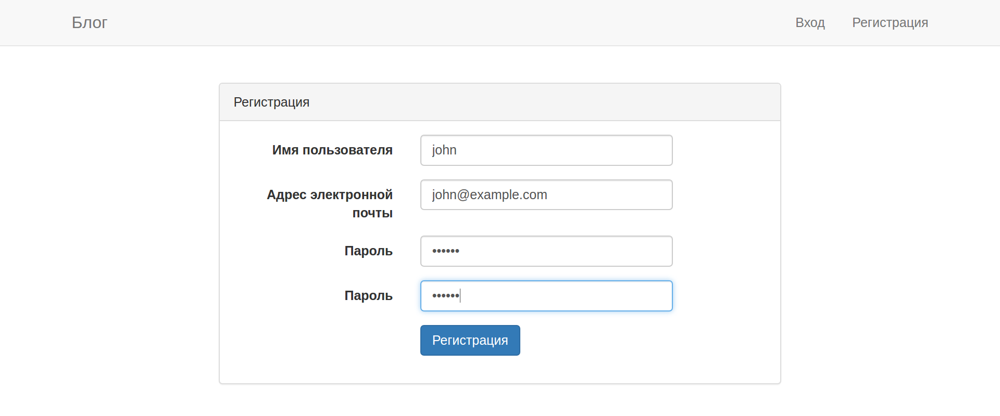

Порядок выполнения работы
- Узнать цель работы.
- Получить задание.
- Подготовить техническое и программное обеспечение.
- Внимательно ознакомиться с теоретическими сведениями и примером выполнения задания.
- Выполнить задание, одновременно подготавливая черновик отчёта.
- Оформить беловой вариант отчёта.
- Сдать работу преподавателю.
Цель работы
Научиться создавать системы регистрации, аутентификации и авторизации в веб‑приложениях.
Задание
Реализовать подсистемы веб‑приложения для аутентификации и авторизации.
На оценку «3» необходимо выполнить действия по примеру (реализовать подсистему аутентификации; реализовать и применить политику в ресурсном контроллере таким образом, чтобы авторизованные пользователи могли создавать и просматривать все записи в блоге, но могли бы редактировать и удалять только те записи, которые создали сами).
На оценку «4» необходимо дополнительно скрыть гиперссылки на редактирование и удаление записей от тех пользователей, которые не имеют права выполнять указанные действия.
На оценку «5» необходимо дополнительно реализовать систему ролей. Пусть сопоставление пользователей с ролями происходит через phpMyAdmin. Главное — реализовать в политиках такую проверку, которая помимо авторства будет учитывать ещё и роль пользователя, которая, возможно, позволяет редактировать и удалять любую запись независимо от авторства.
Обязательное техническое и программное обеспечение
| Тип | Характеристика, наименование, версия |
|---|---|
| Web framework | Laravel ^7.9.2 |
| Браузер | Совместимый с HTML 5.2 и CSS Snapshot 2018 |
| Валидатор формата | https://jigsaw.w3.org/css-validator/ |
| Валидатор формата | https://validator.w3.org/ |
| Инструмент тестирования | PHPUnit ^8 |
| Компилятор | PHP ^7.2.5 |
| Менеджер пакетов программ | Composer ^1.6.0-RC |
| Модули PHP | ctype, json, mbstring, openssl, PDO, tokenizer, xml |
| Модули PHP для дополнений | bcmath (Telescope), zip (laravel/installer) |
| Модули PHP для MySQL | mysqlnd (не mysqli!), pdo_mysql |
| Модули PHP для SQLite | pdo_sqlite (не sqlite3!) |
| СУБД | MySQL Community Server ^8.0.0 |
| Текстовый процессор | Совместимый с OpenDocument v1.0 |
| Текстовый редактор | Совместимый с UTF‑8 без маркера порядка байтов (BOM) |
Для составления исходного кода рекомендуется использовать следующие текстовые редакторы: Visual Studio Code, Sublime Text. «Блокнот», поставляемый с операционной системой Windows, использовать нельзя!
Примечания для Windows
Пользователям операционной системы Windows рекомендуется установить Open Server Basic, который содержит Apache HTTP Server, MySQL, nginx и PHP.
| Тип | Наименование, версия |
|---|---|
| Библиотека | Microsoft C Runtime Library (CRT) 14.2 |
| Операционная система | Windows Vista SP2 (?), Windows 7 SP1 |
| Тип | Наименование, версия |
|---|---|
| Библиотека | Microsoft C Runtime Library (CRT) 14.16 |
| Операционная система | Windows Vista SP2 (?), Windows 7 SP1 |
Для установки CRT рекомендуется установить последнюю версию Microsoft Visual C++ 2015–2019 Redistributable [1].
Теоретические сведения
Аутентификация — процесс подтверждения заявленной идентичности для гарантии того, что установленная идентичность пользователя корректна (ГОСТ Р 53632‑2009).
Авторизация — процесс определения достоверности полномочий предъявителя на доступ к ресурсу или использованию услуг (ГОСТ Р 53632‑2009).
Нередко модель предметной области содержит сущности, управление которыми разрешено только определённым аутентифицированным и авторизованным пользователям или их группам. В качестве примера можно привести сообщения в социальной сети: все сообщения всех пользователей хранятся в одной таблице базы данных, но пользователь имеет право редактировать и удалять только те сообщения, для которых он является автором.
Пример выполнения задания
В примерах будут применяться сущности User («Пользователь») и Message («Сообщение»), которые имеют связь «один‑ко‑многим», т. е. в сообщении есть атрибут (свойство), указывающее на автора. Сущность Message используется только в качестве примера! Выберите похожую связь на схеме Вашей базы данных и используйте в настоящей работе.
Аутентификация
Для создания подсистемы аутентификации в проекте на Laravel необходимо установить пакет laravel/ui и затем выполнить команду:
composer require laravel/ui
php artisan ui:authМенеджер проекта Artisan создаст каталог resources/views/auth с шаблонами страниц в формате Blade, а также добавит строки Auth::routes(); и Route::get('/home', 'HomeController@index')->name('home'); в файл routes/web.php. Выведите таблицу маршрутизации.
php artisan route:listВы должны увидеть как минимум формы регистрации и аутентификации пользователей — испытайте их, перейдя по гиперссылке: и зарегистрировав нового пользователя.
Шаблоны, которые создал Artisan, свёрстаны с использованием оформительской библиотеки Bootstrap, что упрощает разработку. Вместе с тем, в шаблонах нет констант для интернационализации — впоследствии придётся исправить этот недостаток, а затем выполнить перевод пользовательского интерфейса как минимум на русский язык.
В целом же, подсистема аутентификации готова к эксплуатации.
Важное замечание. Теперь из объекта класса Request или его подкласса можно вызвать метод user(), который вернёт объект аутентифицированного пользователя. Теперь мы наконец‑то сможем указать значение внешнего ключа в таблице messages!
Например, в методе store() контроллера MessageController было написано так:
// Извлекаем поля формы из запроса.
$attributes = $request->only(['title', 'content']);
// Сохраняем сообщение в БД.
$message = Message::create($attributes);В результате в БД размещался кортеж с атрибутом user_id, равным NULL. Настало время это исправить. Поскольку метод create() модели принимает в качестве аргумента ассоциативный массив, ключи которого соответствуют именам атрибутов в таблице, нам нужно всего‑то добавить в массив элемент под ключом user_id, значением которого будет значение первичного ключа текущего пользователя:
// Извлекаем поля формы из запроса.
$attributes = $request->only(['title', 'content']);
$attributes['user_id'] = $request->user()->id;
// Сохраняем сообщение в БД.
$message = Message::create($attributes);Авторизация
Laravel предлагает два средства авторизации:
- ворота (англ. gates) — замыкание функции PHP (англ. closures);
- политика (англ. policies) — класс PHP.
Политика должна быть определена для конкретной модели или ресурса, ворота — нет. Способы можно комбинировать.
Важно отметить, что в Laravel пройти авторизацию может только аутентифицированный пользователь.
Создание политики
Выполните следующую команду, заменив в ней слово «Имя» на имя подчинённой сущности с Вашей схемы БД:
php artisan make:policy --model=Имя ИмяPolicyВ данной инструкции в качестве примера приведена сущность с именем Message, поэтому команда создания политики примет следующий вид:
php artisan make:policy --model=Message MessagePolicyВезде, где в инструкции приведено имя Message, Вам следует использовать имя выбранной Вами сущности. Будьте внимательны!
Artisan создаст файл app/Policies/MessagePolicy.php с заготовкой класса MessagePolicy. Аргументами методов view(), update(), delete() выступают объекты класса User и Message; у метода create() предусмотрен только первый из аргументов. Наша задача — реализовать методы так, чтобы они возвращали true, если операция над конкретным объектом разрешена конкретному пользователю, и false в противном случае.
Мы огульно разрешим просмотр и добавление сообщений всем аутентифицированным пользователям (тела методов view() и create() будут содержать только return true;), а редактирование и удаление разрешим в том случае, если атрибуты (свойства) id пользователя и user_id сообщения совпадают: return $user->id === $message->user_id;. Другими словами, каждый пользователь сможет редактировать и удалять только те сообщения, по отношению к которым он выступает в роли автора.
Приведите файл app/Policies/MessagePolicy.php в соответствие следующему примеру и сохраните его.
<?php
namespace App\Policies;
use App\User;
use App\Message;
use Illuminate\Auth\Access\HandlesAuthorization;
class MessagePolicy
{
use HandlesAuthorization;
/**
* Обуславливает просмотр любого сообщения.
*
* @param \App\User $user
* @return mixed
*/
public function viewAny(User $user)
{
return true;
}
/**
* Обуславливает просмотр конкретного сообщения.
*
* @param \App\User $user
* @param \App\Message $message
* @return mixed
*/
public function view(User $user, Message $message)
{
return true;
}
/**
* Обуславливает создание сообщений.
*
* @param \App\User $user
* @return mixed
*/
public function create(User $user)
{
return true;
}
/**
* Обуславливает обновление (редактирование) конкретного сообщения.
*
* @param \App\User $user
* @param \App\Message $message
* @return mixed
*/
public function update(User $user, Message $message)
{
return $user->id === $message->user_id;
}
/**
* Обуславливает логическое удаление конкретного сообщения.
*
* @param \App\User $user
* @param \App\Message $message
* @return mixed
*/
public function delete(User $user, Message $message)
{
// Может ли данный пользователь удалить данное сообщение?
return $user->id === $message->user_id;
}
/**
* Обуславливает восстановление конкретного сообщения.
*
* @param \App\User $user
* @param \App\Message $message
* @return mixed
*/
public function restore(User $user, Message $message)
{
return $user->id === $message->user_id;
}
/**
* Обуславливает физическое удаление конкретного сообщения.
*
* @param \App\User $user
* @param \App\Message $message
* @return mixed
*/
public function forceDelete(User $user, Message $message)
{
return $user->id === $message->user_id;
}
}
Регистрация политики
Политика создана, но пока не зарегистрирована и поэтому не применяется системой.
Политику необходимо зарегистрировать в провайдере службы авторизации и сопоставить с классом модели. Откройте на редактирование файл app/Providers/AuthServiceProvider.php, найдите массив $policies и добавьте между квадратными скобками следующую строку:
'App\Message' => 'App\Policies\MessagePolicy',Эта строка означает, что в отношении сущности Message можно применять политику MessagePolicy. Сохраните изменения в файле. Политика зарегистрирована, и теперь её можно применять.
Применение политики
Laravel предлагает множество способов применения зарегистрированной политики.
В шаблонах Blade
Директива @can в шаблоне Blade (в файле с расширением blade.php) позволяет вызвать метод политики и в зависимости от результата вывести или скрыть отдельные элементы веб‑страницы: гиперссылки, изображения, кнопки и т. п. Первым аргументом @can выступает имя вызываемого метода политики, вторым — объект модели.
Пример — в нём в шаблон из контроллера передан объект $message (экземпляр класса Message):
@can('update', $message)
Этот текст выводится, если вызов update() из MessagePolicy возвращает true.
@endcanИспользуя такой подход, можно показать гиперссылку на страницу редактирования только тем пользователям, которым разрешено редактирование именно этой записи:
@can('update', $message)
<a href="{{ route('message.update', $message->id) }}">
Отредактировать сообщение
</a>
@endcanВ маршрутах
Зарегистрированную политику также можно вызвать в файлах маршрутизации (например, в routes/web.php) через промежуточное программное обеспечение под названием can, которое указывает на класс \Illuminate\Auth\Middleware\Authorize::class.
Пример для отдельного маршрута:
Route::get('entries/{message}/update', 'MessageController@update')
->name('entries.update') // Имя маршрута.
->middleware('can:update') // Включён, если истинен update() из MessagePolicy.
;Аргумент 'can:update' означает, что методу middleware() следует вызвать метод политики update().
Пример для группы маршрутов:
Route::group(['middleware' => 'can:access'], function () {
// Маршруты, которые будут доступны только тем пользователям,
// для которых метод политики `access()`{.php} вернёт `true`{.php}.
});В контроллерах
Политику можно задействовать в контроллере, вызвав в начале каждого защищаемого метода функцию authorize(). Как и в предыдущих случаях, Laravel должен знать, какой именно метод политики следует вызвать.
В случае с контроллером вызов производится автоматически, если имя метода контроллера есть в следующей таблице.
| Метод контроллера | Метод политики |
|---|---|
show() |
view() |
create(), store() |
create() |
edit(), update() |
update() |
destroy() |
delete() |
Если так, то следующее предложение
$this->authorize(Message::class);при вызове в теле метода create() контроллера MessageController автоматически задействует метод create() политики MessagePolicy.
Если метода нет в таблице, мы должны указать его явно:
$this->authorize('delete', $message);Такое предложение в теле метода remove() контроллера MessageController (этого метода нет в таблице) приведёт к вызову метода delete() политики MessagePolicy.
В ресурсных контроллерах
Мы будем применять как минимум этот способ. В ресурсном контроллере (например, app/Http/Controllers/MessageController.php) можно определить контруктор, вызывающий метод authorizeResource() с классом модели в качестве аргумента:
public function __construct()
{
$this->authorizeResource(Message::class);
}Теперь authorize() будет автоматически вызван при вызове тех методов ресурсного контроллера, которые перечислены в таблице. Впрочем, в начале метода remove() так или иначе придётся явно вызвать $this->authorize('delete', $message), поскольку мы самостоятельно добавили этот метод в контроллер. Фактически это приведёт к вызову метода delete($message) из класса политики MessagePolicy.
Сохраните изменения в контроллере и через браузер проверьте работоспособность его методов. Отныне доступ к сообщениям получают только аутентифицированные пользователи, причём каждый из них имеет право редактировать и удалять только те сообщения, автором которых он является. Попытка отредактировать или удалить чужое сообщение закончится выводом сообщения об ошибке.
Результат

Структура отчёта
Отчёт о выполнении работы должен содержать следующие разделы:
- постановка задачи;
- цель работы;
- аппаратные и программные средства;
- теоретические сведения;
- входные и выходные данные (по необходимости);
- тесты (по необходимости);
- исходный код;
- результаты работы.
Список использованных источников
1. Install requirements [Электронный ресурс] // PHP.net. URL: https://www.php.net/manual/en/install.windows.requirements.php (дата обращения: 17.05.2020).